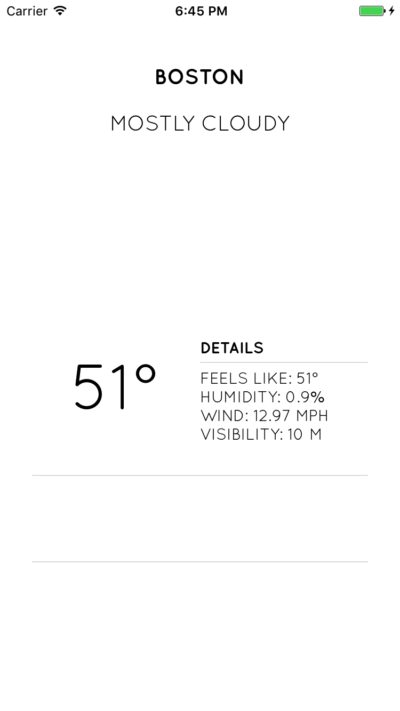

<!--
Copyright (c) 2016 Google Inc.

Licensed under the Apache License, Version 2.0 (the "License"); you may not
use this file except in compliance with the License. You may obtain a copy of
the License at

    http://www.apache.org/licenses/LICENSE-2.0

Unless required by applicable law or agreed to in writing, software
distributed under the License is distributed on an "AS IS" BASIS, WITHOUT
WARRANTIES OR CONDITIONS OF ANY KIND, either express or implied. See the
License for the specific language governing permissions and limitations under
the License.
-->
<link rel="import" href="../../step-style.html">
<link rel="import" href="../../syntax-style.html">
<dom-module id="step-5">
   <style include="step-style"></style>
   <style include="syntax-style"></style>

  <template>
    <p>Now, it's time to get the weather! You need to head 
      over to <a href="https://darksky.net/dev/register">Forecast.io</a> and get 
      an API key. You'll append that to your call to this API.
    </p>
    
    <p>In the getMyWeather() method, add the following code under the call to this.getMyCity() where you see the comment '//http call', 
      replacing the 'your-api-key' string with your API key:</p>

    <pre>
        console.log(loc.latitude + ' and ' + loc.longitude);
        http.request({
            url: "https://api.forecast.io/forecast/your-api-key/"+loc.latitude+","+loc.longitude,
            method: "GET"
        }).then( response => {
            var obj = response.content.toJSON();
            this.summary = obj.currently.summary;
            this.humidity = 'humidity: '+obj.currently.humidity.toString()+'%';
            this.windSpeed = 'wind: '+obj.currently.windSpeed.toString()+' mph';
            this.apparentTemperature = 'feels like: '+Math.round(obj.currently.apparentTemperature).toString() + '°';
            this.visibility = 'visibility: '+obj.currently.visibility.toString()+' m';
            this.currentTemperature = Math.round(obj.currently.temperature).toString() + '°';
            this.setImage(obj.currently.icon.toString());
        }) 
    </pre>

    <p>In this block, you make a call to the Forecast.io API 
      and then parse the data. You can get a lot of good data 
      back from this API, so feel free to explore it further.</p>

      
      

    <p>The app is starting to look more interesting! In the next section, we'll finish the UI.</p>
  </template>
  <script>
    Polymer({
      is: "step-5"});
  </script>
</dom-module>
